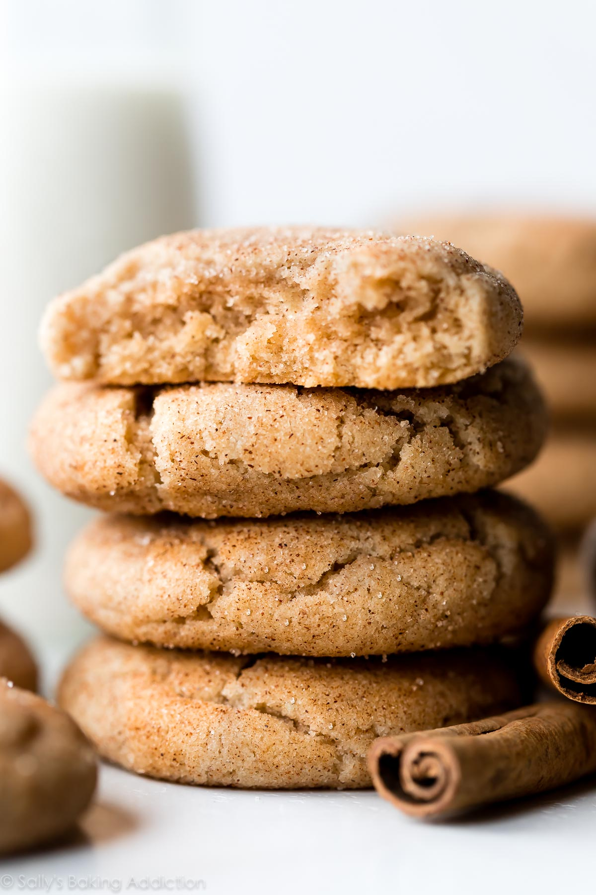

Snickerdoodles

The simple and quick recipe your looking for.
Ingredients
- 2 1/2 cups all-purpose flour
- 2 teaspoons cream of tartar
- 1 teaspoon baking soda
- 3/4 teaspoon salt
- 1 cup unsalted butter, melted, cooled slightly
- 1/2 cup (packed) light brown sugar
- 1 cup plus 2 tablespoons granulated sugar
- 1 vanilla bean
- 2 large eggs, room temperature
- 1 tablespoon ground cinnamon
Steps
- Whisk flour, cream of tartar, baking soda, and salt in a medium bowl.
- Mix beat butter, brown sugar, and 1 cup granulated sugar in a large bowl, scraping down sides until incorporated.
- Scrape in seeds from vanilla bean; reserve pods for another use.
- Add eggs and continue to beat until mixture is pale yellow, begins to thicken, and falls from beaters in a ribbon-like stream, about 3 minutes.
- Gradually add dry ingredients and continue to beat, scraping down sides and bottom of bowl, until just combined. Let sit at room temperature at least 30 minutes to hydrate flour (dough will be very loose but will thicken as it sits).
- Arrange a rack in center of oven; preheat to 400°. Line a rimmed baking sheet with parchment paper. Whisk cinnamon and remaining 2 Tbsp. sugar in a medium bowl.
- Using a 1-oz. ice cream scoop or a generous, heaping tablespoonful, portion cookies and roll into small balls with your hands. Toss in cinnamon-sugar until coated all over. Transfer to prepared sheet, spacing about 3" apart. Do not flatten; cookies will spread as they bake.
- Bake cookies until edges are lightly browned and firm but centers are puffed and soft, 8–10 minutes. Let cool on sheets 10 minutes, then transfer to a wire rack and let cool completely.
- Enjoy the cookies!